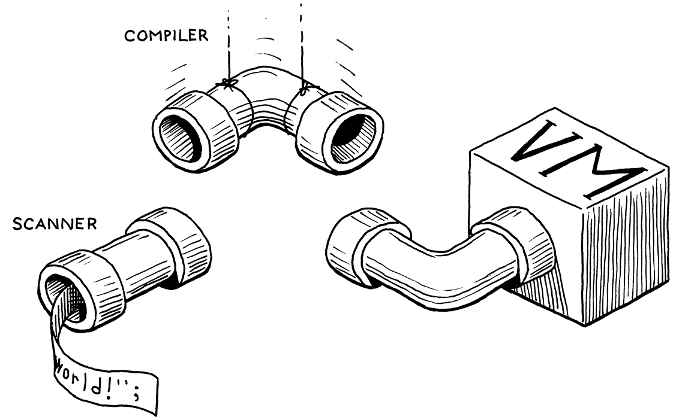
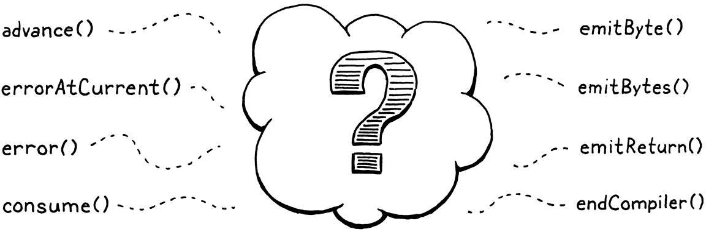
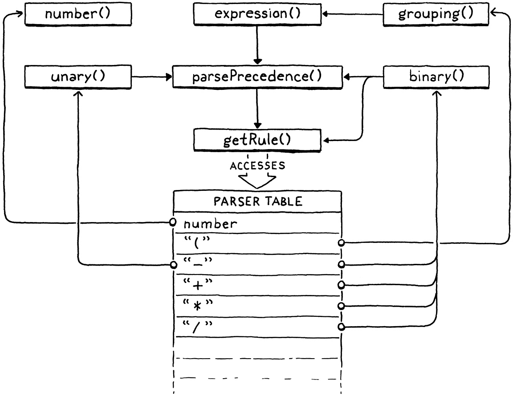

编译表达式
在我们人生旅程的中途，我发现自己走进了一片幽暗的森林，笔直的道路已不知所踪。
但丁·阿利吉耶里，《地狱篇》
这一章之所以激动人心，不是因为一个、两个，而是因为三个理由。第一，它补上了虚拟机执行流水线的最后一段。一旦就位，我们就能把用户的源代码从扫描一路接通到执行。

第二，我们要写一个货真价实的编译器。它解析源代码，输出一串底层的二进制指令。没错，那是字节码，不是什么芯片的原生指令集，但比 jlox 贴近底层多了。我们就要成为真正的语言黑客了。
第三，也是最后一个理由，我终于能给你展示我最钟爱的算法之一：沃恩·普拉特的「自顶向下运算符优先级解析」。这是我所知道的解析表达式最优雅的办法。它从容处理前缀运算符、后缀、中缀、mixfix，以及你能想到的任何一种 -fix。它对付优先级和结合性连一滴汗都不用出。我爱它。
跟往常一样，在进入好玩的部分之前，我们得先处理一些准备工作。先吃蔬菜，才轮得到甜点。首先，把当初为了测试扫描器写的临时脚手架丢掉，换点更有用的东西。
InterpretResult interpret(const char* source) {
在 interpret() 内
替换 2 行
Chunk chunk; initChunk(&chunk); if (!compile(source, &chunk)) { freeChunk(&chunk); return INTERPRET_COMPILE_ERROR; } vm.chunk = &chunk; vm.ip = vm.chunk->code; InterpretResult result = run(); freeChunk(&chunk); return result;
}
我们创建一个新的空字节码块，交给编译器。编译器会拿来用户的程序，把它编译成字节码填满这个块。至少，在程序没有任何编译错误时是这样。要是真的碰上错误，compile() 会返回 false，我们就把这个没法用的块丢弃。
否则，我们就把填好的块交给虚拟机执行。等虚拟机跑完，我们释放这个块，完事。如你所见，compile() 的签名现在变了。
#define clox_compiler_h
替换 1 行
#include "vm.h" bool compile(const char* source, Chunk* chunk);
#endif
我们传入一个字节码块，编译器把代码写进去；compile() 则返回编译是否成功。实现里的签名也照做同样的改动。
#include "scanner.h"
在函数 compile() 内
替换 1 行
bool compile(const char* source, Chunk* chunk) {
initScanner(source);
那句调用 initScanner() 是全章唯一活下来的代码。把我们为测试扫描器写的临时代码撕掉，换成这三行：
initScanner(source);
在 compile() 内
替换 13 行
advance(); expression(); consume(TOKEN_EOF, "Expect end of expression.");
}
对 advance() 的调用给扫描器「引了引水」。我们很快会看到它干什么。然后我们解析一个表达式。我们还不打算处理语句，所以这是目前支持的唯一一部分文法。等我们几章之后加上语句时，会回过头来处理它。编译完表达式之后，我们应该正处在源代码末尾，于是检查一下那个哨兵值 EOF 词法单元。
本章剩下的篇幅，我们都会用来让这个函数跑起来，尤其是那个小小的 expression() 调用。通常情况下，我们会直接扎进函数定义，从上到下把实现讲一遍。
可这一章不一样。Pratt 的解析手法一旦在你脑子里装齐了，就简单得出奇，可要把它切成一块块小份，就有点棘手了。它当然是递归的，这是麻烦之一。但它还依赖一张庞大的数据表。随着我们逐步搭出这个算法，那张表会不断长出新的列。
我不想每次扩展这张表，都把四十来行代码重讲一遍。所以我们从外围下手，一步步走进解析器的核心，先把周边零碎的部分讲完，再进入多汁的中心。这比其他章要多一点耐心和脑子里的草稿纸空间，但这是我能做到的最好安排。
17 . 1单遍编译
编译器大致有两项工作。它解析用户的源代码，弄懂它是什么意思；然后拿这份理解，输出一组能产生相同语义的底层指令。许多语言在实现里把这两个角色拆成两个单独的遍：语法解析器产出一棵 AST——就跟 jlox 一样——然后由代码生成器遍历这棵 AST，输出目标代码。
在 clox 里，我们走老派路线，把这两遍合成一遍。当年语言黑客这么做，是因为计算机的内存真的不够存下整个源文件的 AST。我们这么做，是因为能让编译器更简单，而写 C 的时候，这是个实打实的好处。
像我们要搭的这类单遍编译器，并非对每种语言都好用。由于编译器在生成代码时只能窥孔式地看到用户程序的一小块，语言本身就得设计成：理解一段语法时不需要太多周边上下文。好在 Lox 又小又是动态类型，很适合这套路子。
具体来说，我们 C 里的「compiler」模块，既有你从 jlox 那儿认识的解析功能——消费词法单元、匹配期望的词法单元类型等等；也有代码生成的功能——发射字节码、把常量加进目标字节码块。（这也意味着，在本章以及后面的章节里，我会把「解析」和「编译」混着用。）
我们先搭出解析和代码生成这两半。然后用中间那段代码把它们缝合起来——那段代码用 Pratt 的手法，解析 Lox 特有的文法，输出正确的字节码。
17 . 2解析词法单元
首先是编译器的前半部分。这个函数的名字你应该听着耳熟。
#include "scanner.h"
static void advance() { parser.previous = parser.current; for (;;) { parser.current = scanToken(); if (parser.current.type != TOKEN_ERROR) break; errorAtCurrent(parser.current.start); } }
跟在 jlox 里一样，它沿着词法单元流往前走。它向扫描器要下一个词法单元，存起来备用。在那之前，它把旧的 current 词法单元挪进一个 previous 字段。这后面会派上用场，好让我们在匹配到一个词法单元之后还能拿到它的词素。
读取下一个词法单元的代码包在一个循环里。记住，clox 的扫描器不报告词法错误。它不报错，转而造出特殊的错误词法单元，把报告的责任交给解析器。我们就在这里报告。
我们不停地循环，读取词法单元、报告错误，直到碰上一个非错误的，或者到达末尾。这样一来，解析器的其余部分只会看到合法的词法单元。当前和上一个词法单元就存在这个结构体里：
#include "scanner.h"
typedef struct { Token current; Token previous; } Parser; Parser parser;
static void advance() {
跟我们在别的模块里一样，我们有一个该结构体类型的全局变量，这样就不必在编译器里把它从一个函数传到另一个函数。
17 . 2 . 1处理语法错误
如果扫描器递给我们一个错误词法单元，我们得真正告诉用户。靠的就是这个：
加在变量 parser 之后
static void errorAtCurrent(const char* message) { errorAt(&parser.current, message); }
我们从当前词法单元里取出位置，好告诉用户错误出在哪儿，然后转交给 errorAt()。更常见的情况是，我们在刚消费掉的那个词法单元的位置上报错，所以就给另一个函数起了这个短点的名字：
加在变量 parser 之后
static void error(const char* message) { errorAt(&parser.previous, message); }
真正干活的是这里：
加在变量 parser 之后
static void errorAt(Token* token, const char* message) { fprintf(stderr, "[line %d] Error", token->line); if (token->type == TOKEN_EOF) { fprintf(stderr, " at end"); } else if (token->type == TOKEN_ERROR) { // 什么都不做。 } else { fprintf(stderr, " at '%.*s'", token->length, token->start); } fprintf(stderr, ": %s\n", message); parser.hadError = true; }
首先，我们打印错误发生的位置。如果词素能给人看，我们就尽量把它显示出来。然后打印错误消息本身。之后，我们置起这个 hadError 标志。它记录编译期间有没有发生过错误。这个字段也住在解析器结构体里。
Token previous;
在结构体 Parser 内
bool hadError;
} Parser;
前面我说过，一旦发生错误，compile() 就该返回 false。现在我们可以让它这么做了。
consume(TOKEN_EOF, "Expect end of expression.");
在 compile() 内
return !parser.hadError;
}
关于错误处理，我还要再介绍一个标志位。我们想避免错误连锁。如果用户的代码里有个错，解析器又被搞糊涂、搞不清自己走到了文法的哪儿，我们不希望它在第一个错误之后，哗啦啦吐出一大堆毫无意义的连锁错误。
在 jlox 里，我们用 panic 模式错误恢复解决了这个问题。那台 Java 解释器里，我们抛出一个异常，从所有解析器代码里一路退出，退到某个点，在那里可以跳过词法单元、重新同步。C 里没有异常。我们改耍一点障眼法：加一个标志位，跟踪眼下是不是处在 panic 模式里。
bool hadError;
在结构体 Parser 内
bool panicMode;
} Parser;
错误一旦发生，我们就置起它。
static void errorAt(Token* token, const char* message) {
在 errorAt() 内
parser.panicMode = true;
fprintf(stderr, "[line %d] Error", token->line);
之后，我们照常继续编译，权当错误从没发生过。这段字节码永远不会被执行，所以继续一路开下去也无害。诀窍在于：panic 模式标志位一旦置起，我们就干脆把检测到的其他错误统统压住。
static void errorAt(Token* token, const char* message) {
在 errorAt() 内
if (parser.panicMode) return;
parser.panicMode = true;
解析器很有可能跑到草丛里迷失方向，但用户不会知道，因为错误全被吞掉了。等解析器走到一个同步点，panic 模式就结束。对 Lox，我们选的是语句边界，所以等后面把语句加进编译器时，我们会在那里清掉这个标志。
这些新字段需要初始化。
initScanner(source);
在 compile() 内
parser.hadError = false; parser.panicMode = false;
advance();
为了显示错误，我们还需要一个标准头文件。
#include <stdio.h>
#include <stdlib.h>
#include "common.h"
还剩最后一个解析函数，也是 jlox 的一位老朋友。
加在 advance() 之后
static void consume(TokenType type, const char* message) { if (parser.current.type == type) { advance(); return; } errorAtCurrent(message); }
它跟 advance() 类似，都会读取下一个词法单元。但它还会校验这个词法单元是不是期望的类型。不是就报告一个错误。编译器里大多数语法错误靠的都是这个函数。
好，前端先讲到这儿。
17 . 3发射字节码
等我们解析并弄懂用户程序的一段之后，下一步就是把它翻译成一串字节码指令。从最简单的一步开始：往字节码块末尾追加一个字节。
加在 consume() 之后
static void emitByte(uint8_t byte) { writeChunk(currentChunk(), byte, parser.previous.line); }
很难相信伟大的东西会流经这么一个简单的函数。它把给定的字节写进去——那可能是某个操作码，也可能是某条指令的操作数。它还顺带把上一个词法单元的行号一并写入，好让运行时错误跟那一行关联起来。
我们要写入的那个字节码块是传进 compile() 的，可它得再传到 emitByte() 里。为此，我们依赖这个中间函数：
Parser parser;
加在变量 parser 之后
Chunk* compilingChunk; static Chunk* currentChunk() { return compilingChunk; }
static void errorAt(Token* token, const char* message) {
眼下，这个字节码块指针跟其他全局状态一样，存在一个模块级变量里。到后面开始编译用户定义的函数时，「当前字节码块」这个概念会变得更复杂。为了免去回头改一大堆代码的麻烦，我把这套逻辑封装进了 currentChunk() 函数。
在写任何字节码之前，我们先初始化这个新的模块变量：
bool compile(const char* source, Chunk* chunk) {
initScanner(source);
在 compile() 内
compilingChunk = chunk;
parser.hadError = false;
然后，到最后，编译完整个字节码块时，我们收个尾。
consume(TOKEN_EOF, "Expect end of expression.");
在 compile() 内
endCompiler();
return !parser.hadError;
里面会调用这个：
加在 emitByte() 之后
static void endCompiler() { emitReturn(); }
这一章里，虚拟机只处理表达式。你运行 clox 时，它会解析、编译并执行一个表达式，然后打印结果。为了打印那个值，我们暂时借用了 OP_RETURN 指令。所以我们让编译器在字节码块末尾加上一条 OP_RETURN。
加在 emitByte() 之后
static void emitReturn() { emitByte(OP_RETURN); }
既然来到后端了，不妨顺手把日子过得舒坦点。
加在 emitByte() 之后
static void emitBytes(uint8_t byte1, uint8_t byte2) { emitByte(byte1); emitByte(byte2); }
往后，需要我们「先写一个操作码、再跟一个单字节操作数」的场合会多到值得专门定义这么一个便利函数。
17 . 4解析前缀表达式
解析和代码生成两边的工具函数都凑齐了。缺的是中间那段把它们连起来的代码。

compile() 里还剩最后一步没实现，就是这个函数：
加在 endCompiler() 之后
static void expression() { // 这里该放什么？ }
我们还没准备好实现 Lox 里的每一种表达式。我们连布尔值都还没有呢。这一章，我们只管四种：
- 数字字面量：
123 - 用于分组的小括号：
(123) - 一元取负：
-123 - 四则运算的「天启四骑士」：
+、-、*、/
随着我们逐个写出编译这几类表达式的函数，我们也会顺带攒出表驱动解析器调用它们时所需的东西。
17 . 4 . 1词法单元的解析函数
先看那些只由单个词法单元构成的 Lox 表达式。这一章里只有数字字面量，但以后会更多。我们这样编译它们：
我们把每种词法单元类型对应到一类不同的表达式。为每类表达式定义一个函数，输出相应的字节码。然后我们造一个函数指针数组，数组的下标对应 TokenType 枚举值，每个下标处的函数，就是编译那一类词法单元生成表达式的代码。
为了编译数字字面量，我们在数组的 TOKEN_NUMBER 下标处，存一个指向下面这个函数的指针。
加在 endCompiler() 之后
static void number() { double value = strtod(parser.previous.start, NULL); emitConstant(value); }
我们假定数字字面量的词法单元已经被消费掉，存在 previous 里。我们取出那个词素，用 C 标准库把它转换成 double 值。然后用下面这个函数生成加载该值的代码：
加在 emitReturn() 之后
static void emitConstant(Value value) { emitBytes(OP_CONSTANT, makeConstant(value)); }
首先，我们把值加进常量表；然后发射一条 OP_CONSTANT 指令，它在运行时把这个值压入栈。要往常量表里插一条记录，我们靠的是：
加在 emitReturn() 之后
static uint8_t makeConstant(Value value) { int constant = addConstant(currentChunk(), value); if (constant > UINT8_MAX) { error("Too many constants in one chunk."); return 0; } return (uint8_t)constant; }
大部分活是 addConstant() 干的，我们前面某一章定义过它。它把给定的值加到字节码块常量表的末尾并返回其下标。这个新函数的职责，主要是确保我们没有太多常量。由于 OP_CONSTANT 指令用单个字节来放索引操作数，一个字节码块里最多只能存和加载 256 个常量。
基本上就是这些。只要有一段合适的代码，消费掉一个 TOKEN_NUMBER 词法单元，在函数指针数组里查出 number()，再调用它，我们现在就能把数字字面量编译成字节码了。
17 . 4 . 2用于分组的小括号
要是每个表达式都只有一个词法单元那么长，我们假想中的那张解析函数指针数组就太棒了。唉，可惜大多数表达式更长。不过，许多表达式都以某个特定的词法单元开头。我们管这些叫前缀表达式。比如，解析一个表达式时，如果当前词法单元是 (，我们就知道眼前必定是一个带括号的分组表达式。
结果发现，我们的函数指针数组也能应付它们。一类表达式的解析函数想消费多少额外的词法单元都行，跟普通的递归下降解析器一模一样。小括号是这么工作的：
加在 endCompiler() 之后
static void grouping() { expression(); consume(TOKEN_RIGHT_PAREN, "Expect ')' after expression."); }
同样，我们假定开头那个 ( 已经被消费掉了。我们递归地回头调用 expression()，编译括号之间的表达式，最后解析收尾的 )。
就后端而言，分组表达式里头真的一无所有。它唯一的作用是语法上的——让你在一个期望高优先级的地方，插进一个低优先级的表达式。因此它自身没有任何运行时语义，也就不发射任何字节码。里面那次对 expression() 的调用，会负责为括号内的表达式生成字节码。
17 . 4 . 3一元取负
一元减号也是个前缀表达式，所以也适配我们的模型。
加在 number() 之后
static void unary() { TokenType operatorType = parser.previous.type; // 编译操作数。 expression(); // 发出运算符指令。 switch (operatorType) { case TOKEN_MINUS: emitByte(OP_NEGATE); break; default: return; // 走不到这儿。 } }
开头那个 - 词法单元已经被消费，正待在 parser.previous 里。我们从它身上取出词法单元类型，好记下面对的是哪个一元运算符。眼下这还没必要，但等我们下一章用同一个函数编译 ! 运算符时，就会明白它的用意。
跟 grouping() 里一样，我们递归调用 expression() 编译操作数。之后，发射执行取负的字节码。既然 - 在左边，却把取负指令写在操作数字节码之后，看着可能有点怪，但从执行顺序来想就顺了：
-
我们先求值操作数，它的值留在栈上。
-
然后我们弹出那个值，取负，再把结果压回去。
所以 OP_NEGATE 指令应当最后发射。这正是编译器工作的一部分——按源代码里出现的顺序解析程序，再把它重新排成执行发生的顺序。
不过这段代码有个问题。unary() 调用的 expression() 会不管优先级，把任何表达式都当作操作数解析掉。等我们加上二元运算符和其他语法，这就会出错。看这个：
-a.b + c;
这里，- 的操作数应该只是 a.b 那个表达式，而不是整个 a.b + c。可如果 unary() 调用 expression()，后者会乐呵呵地把剩下的代码连 + 一起全啃掉。expression() 就会错误地把 - 当成比 + 优先级还低。
解析一元 - 的操作数时，我们只需要编译某个优先级及以上级别的表达式。在 jlox 的递归下降解析器里，我们靠调用「我们愿意允许的最低优先级表达式」对应的解析方法来实现（这里是 call()）。每个解析特定表达式的方法，同时也会解析所有更高优先级的表达式，于是整张优先级表就被涵盖了。
clox 里像 number()、unary() 这样的解析函数不一样。每个都只解析恰好一种类型的表达式，不会顺带把更高优先级的表达式一起解析进去。我们需要另一种解法，它长这样：
加在 unary() 之后
static void parsePrecedence(Precedence precedence) { // 这里该放什么？ }
这个函数——等我们实现它之后——从当前词法单元出发，解析任何处于给定优先级或更高优先级的表达式。在能写出这个函数体之前，我们还有些准备工作要过，但你大概猜得到，它会用到我一直在说的那张解析函数指针表。眼下先别太操心它怎么工作。为了把「优先级」当作参数传进来，我们用数字来定义它。
} Parser;
加在结构体 Parser 之后
typedef enum { PREC_NONE, PREC_ASSIGNMENT, // = PREC_OR, // or PREC_AND, // and PREC_EQUALITY, // == != PREC_COMPARISON, // < > <= >= PREC_TERM, // + - PREC_FACTOR, // * / PREC_UNARY, // ! - PREC_CALL, // . () PREC_PRIMARY } Precedence;
Parser parser;
这就是 Lox 全部的优先级级别，从最低到最高排列。由于 C 会隐式地给枚举成员依次递增的数字，这意味着 PREC_CALL 在数值上比 PREC_UNARY 大。举个例子，假设编译器正面对这么一段代码：
-a.b + c
如果我们调用 parsePrecedence(PREC_ASSIGNMENT)，它会把整个表达式解析掉，因为 + 的优先级高于赋值。反之，如果我们调用 parsePrecedence(PREC_UNARY)，它会编译 -a.b 然后停下。它不会继续把 + 也吃掉，因为加法的优先级低于一元运算符。
有了这个函数，补上 expression() 缺失的函数体就是小菜一碟。
static void expression() {
在 expression() 内
替换 1 行
parsePrecedence(PREC_ASSIGNMENT);
}
我们直接解析最低的优先级级别，它把所有更高优先级的表达式也囊括在内。现在，为了编译一元表达式的操作数，我们调用这个新函数，并把它限制在合适的级别：
// 编译操作数。
在 unary() 内
替换 1 行
parsePrecedence(PREC_UNARY);
// 发出运算符指令。
我们用一元运算符自身的 PREC_UNARY 优先级，来允许像 !!doubleNegative 这样的嵌套一元表达式。由于一元运算符的优先级相当高，这就能正确地排除掉二元运算符之类的东西。说到二元运算符……
17 . 5解析中缀表达式
二元运算符跟前面那些表达式不同，因为它们是中缀的。对别的表达式，我们从第一个词法单元就知道自己在解析什么。对中缀表达式，我们要等到解析完它的左操作数、又在中间撞见那个运算符词法单元之后，才知道自己正处在一个二元运算符当中。
看个例子：
1 + 2
就用我们目前所知的东西，走一遍编译它的过程：
-
我们调用
expression()。它转而调用parsePrecedence(PREC_ASSIGNMENT)。 -
那个函数（等我们实现它之后）看到开头那个数字词法单元，认出这是在解析一个数字字面量，于是把控制权交给
number()。 -
number()创建一个常量，发射一条OP_CONSTANT，然后返回parsePrecedence()。
现在怎么办？这次 parsePrecedence() 调用应该把整个加法表达式都消费掉，所以它得想办法继续下去。好在解析器正好停在我们需要的位置。既然我们已经编译完开头的数字表达式，下一个词法单元就是 +。这正是 parsePrecedence() 需要的那个词法单元：它借此察觉我们正处在一个中缀表达式当中，并意识到我们刚编译好的那个表达式其实是它的一个操作数。
所以这个假想中的函数指针数组，列的不只是「解析以某个词法单元开头的表达式」的函数。它其实是一张函数指针表。一列把前缀解析函数跟词法单元类型关联起来，第二列把中缀解析函数跟词法单元类型关联起来。
我们用来给 TOKEN_PLUS、TOKEN_MINUS、TOKEN_STAR 和 TOKEN_SLASH 当中缀解析函数的，是这个：
加在 endCompiler() 之后
static void binary() { TokenType operatorType = parser.previous.type; ParseRule* rule = getRule(operatorType); parsePrecedence((Precedence)(rule->precedence + 1)); switch (operatorType) { case TOKEN_PLUS: emitByte(OP_ADD); break; case TOKEN_MINUS: emitByte(OP_SUBTRACT); break; case TOKEN_STAR: emitByte(OP_MULTIPLY); break; case TOKEN_SLASH: emitByte(OP_DIVIDE); break; default: return; // 走不到这儿。 } }
调用前缀解析函数时，开头的词法单元已经被消费掉了。中缀解析函数更是直接置身其中——整个左操作数表达式都已经编译完毕，随后的中缀运算符也已被消费。
左操作数先被编译，这没问题。它意味着运行时那段代码先被执行。那段代码一跑，产出的值就会落在栈上——正是中缀运算符随后需要它的地方。
然后我们来到这里，用 binary() 处理剩下那些算术运算符。这个函数编译右操作数，很像 unary() 编译自己尾随的操作数。最后，它发射执行二元运算的那条字节码指令。
运行时，虚拟机会按顺序执行左、右操作数的代码，把它们的值留在栈上。然后执行运算符对应的指令。那条指令弹出这两个值，算出运算结果，再压回去。
这里大概最扎你眼的是那行 getRule()。解析右操作数时，我们又得操心优先级了。拿这么个表达式：
2 * 3 + 4
解析 * 表达式的右操作数时，我们只需要抓住 3，而不是 3 + 4，因为 + 的优先级低于 *。我们可以为每个二元运算符各定义一个函数，每个都调用 parsePrecedence() 并传入它操作数正确的优先级级别。
可那有点啰嗦。每个二元运算符的右操作数优先级，都比它自己高一级。我们可以用 getRule() 这个东西动态查出来——我们很快会讲到它。有了它，我们就用比本运算符高一级的级别去调用 parsePrecedence()。
这样一来，所有二元运算符都能共用同一个 binary() 函数，哪怕它们的优先级各不相同。
17 . 6一个 Pratt 解析器
编译器的各个零件现在都摆出来了。每条文法产生式都有一个对应的函数：number()、grouping()、unary() 和 binary()。我们还剩 parsePrecedence() 和 getRule() 要实现。我们也知道自己需要一张表：给定一个词法单元类型，它能让我们查出
-
编译「以该类词法单元开头的」前缀表达式所用的函数，
-
编译「左操作数后面跟着该类词法单元」的中缀表达式所用的函数，以及
-
以该类词法单元作运算符的中缀表达式的优先级。
我们把这三样东西包进一个小结构体，它代表解析器表里的一行。
} Precedence;
加在枚举 Precedence 之后
typedef struct { ParseFn prefix; ParseFn infix; Precedence precedence; } ParseRule;
Parser parser;
那个 ParseFn 类型是个简单的 typedef，对应一种不接受参数、也不返回值的函数类型。
} Precedence;
加在枚举 Precedence 之后
typedef void (*ParseFn)();
typedef struct {
驱动整个解析器的那张表，就是一个 ParseRule 数组。我们念叨它念叨了半天，现在你终于能见到它了。
加在 unary() 之后
ParseRule rules[] = { [TOKEN_LEFT_PAREN] = {grouping, NULL, PREC_NONE}, [TOKEN_RIGHT_PAREN] = {NULL, NULL, PREC_NONE}, [TOKEN_LEFT_BRACE] = {NULL, NULL, PREC_NONE}, [TOKEN_RIGHT_BRACE] = {NULL, NULL, PREC_NONE}, [TOKEN_COMMA] = {NULL, NULL, PREC_NONE}, [TOKEN_DOT] = {NULL, NULL, PREC_NONE}, [TOKEN_MINUS] = {unary, binary, PREC_TERM}, [TOKEN_PLUS] = {NULL, binary, PREC_TERM}, [TOKEN_SEMICOLON] = {NULL, NULL, PREC_NONE}, [TOKEN_SLASH] = {NULL, binary, PREC_FACTOR}, [TOKEN_STAR] = {NULL, binary, PREC_FACTOR}, [TOKEN_BANG] = {NULL, NULL, PREC_NONE}, [TOKEN_BANG_EQUAL] = {NULL, NULL, PREC_NONE}, [TOKEN_EQUAL] = {NULL, NULL, PREC_NONE}, [TOKEN_EQUAL_EQUAL] = {NULL, NULL, PREC_NONE}, [TOKEN_GREATER] = {NULL, NULL, PREC_NONE}, [TOKEN_GREATER_EQUAL] = {NULL, NULL, PREC_NONE}, [TOKEN_LESS] = {NULL, NULL, PREC_NONE}, [TOKEN_LESS_EQUAL] = {NULL, NULL, PREC_NONE}, [TOKEN_IDENTIFIER] = {NULL, NULL, PREC_NONE}, [TOKEN_STRING] = {NULL, NULL, PREC_NONE}, [TOKEN_NUMBER] = {number, NULL, PREC_NONE}, [TOKEN_AND] = {NULL, NULL, PREC_NONE}, [TOKEN_CLASS] = {NULL, NULL, PREC_NONE}, [TOKEN_ELSE] = {NULL, NULL, PREC_NONE}, [TOKEN_FALSE] = {NULL, NULL, PREC_NONE}, [TOKEN_FOR] = {NULL, NULL, PREC_NONE}, [TOKEN_FUN] = {NULL, NULL, PREC_NONE}, [TOKEN_IF] = {NULL, NULL, PREC_NONE}, [TOKEN_NIL] = {NULL, NULL, PREC_NONE}, [TOKEN_OR] = {NULL, NULL, PREC_NONE}, [TOKEN_PRINT] = {NULL, NULL, PREC_NONE}, [TOKEN_RETURN] = {NULL, NULL, PREC_NONE}, [TOKEN_SUPER] = {NULL, NULL, PREC_NONE}, [TOKEN_THIS] = {NULL, NULL, PREC_NONE}, [TOKEN_TRUE] = {NULL, NULL, PREC_NONE}, [TOKEN_VAR] = {NULL, NULL, PREC_NONE}, [TOKEN_WHILE] = {NULL, NULL, PREC_NONE}, [TOKEN_ERROR] = {NULL, NULL, PREC_NONE}, [TOKEN_EOF] = {NULL, NULL, PREC_NONE}, };
你能看到 grouping 和 unary 是怎么被塞进各自词法单元类型对应的前缀解析函数那一列的。下一列里，binary 接给了四个算术中缀运算符。这些中缀运算符的优先级也在最后一列里设好了。
除此之外，表里剩下的地方全是 NULL 和 PREC_NONE。那些空格子，大多是因为没有跟那些词法单元关联的表达式。你没法用一个 else 来给表达式开头，而拿 } 当中缀运算符也会相当令人费解。
不过，也因为整份文法我们还没填满。后面几章里，随着我们加入新的表达式类型，这些槽位里会有一些填上函数。我喜欢这种解析路线的一点，就是它让你一眼就能看出哪些词法单元已被文法占用、哪些还空着。
既然有了表，我们终于可以写用它的代码了。我们的 Pratt 解析器就要活过来。最容易定义的函数是 getRule()。
加在 parsePrecedence() 之后
static ParseRule* getRule(TokenType type) { return &rules[type]; }
这个函数只是返回给定下标处的规则。binary() 调用它，查出当前运算符的优先级。这个函数存在的唯一目的，是化解 C 代码里的一个声明循环。binary() 定义在那张规则表之前，好让表能存下指向它的指针。这就意味着 binary() 的函数体没法直接访问那张表。
于是我们把这个查询包进一个函数里。这样我们就能在 binary() 定义之前前置声明 getRule()，然后在表的后面定义 getRule()。由于我们的文法是递归的，我们还需要另外几个前置声明，那就一并解决掉。
emitReturn(); }
加在 endCompiler() 之后
static void expression(); static ParseRule* getRule(TokenType type); static void parsePrecedence(Precedence precedence);
static void binary() {
如果你正跟着动手、自己实现 clox，请特别留意那些告诉你代码片段该放哪儿的小标注。不过别担心，放错了，C 编译器会很乐意告诉你。
17 . 6 . 1带优先级地解析
现在进入好玩的部分。指挥我们定义的所有解析函数的总指挥，就是 parsePrecedence()。先从解析前缀表达式开始。
static void parsePrecedence(Precedence precedence) {
在 parsePrecedence() 内
替换 1 行
advance(); ParseFn prefixRule = getRule(parser.previous.type)->prefix; if (prefixRule == NULL) { error("Expect expression."); return; } prefixRule();
}
我们读出下一个词法单元，查出对应的 ParseRule。如果没有前缀解析函数，那这个词法单元必定是个语法错误。我们报告它，然后返回调用者。
否则，我们调用那个前缀解析函数，让它干活。那个前缀解析器编译前缀表达式的其余部分，消费掉它需要的其他词法单元，然后返回这里。中缀表达式才是有意思的地方，因为优先级登场了。它的实现简单得出奇。
prefixRule();
在 parsePrecedence() 内
while (precedence <= getRule(parser.current.type)->precedence) { advance(); ParseFn infixRule = getRule(parser.previous.type)->infix; infixRule(); }
}
就这些。真的。整个函数是这样工作的：在 parsePrecedence() 开头，我们为当前词法单元查出一个前缀解析器。按定义，第一个词法单元永远属于某种前缀表达式。它可能到头来是嵌在某个或多个中缀表达式里的操作数，但你从左往右读代码时，撞上的第一个词法单元总是属于一个前缀表达式。
解析完它之后——这可能消费了更多词法单元——前缀表达式就完成了。现在我们为下一个词法单元找一个中缀解析器。要是找到了，就意味着我们刚编译完的那个前缀表达式，可能是它的操作数。但前提是这次 parsePrecedence() 调用的 precedence 足够低，容许那个中缀运算符。
如果下一个词法单元优先级太低，或者根本不是中缀运算符，我们就完事了。我们已经把能解析的表达式都解析了。否则，我们消费掉这个运算符，把控制权交给找到的中缀解析器。中缀解析器消费掉它需要的其他词法单元（通常是右操作数），然后返回 parsePrecedence()。接着我们绕回来，看下一个词法单元是不是同样能拿前面整个表达式当操作数的合法中缀运算符。我们就这样一直循环，把中缀运算符和它们的操作数一路碾过去，直到撞上一个不是中缀运算符、或者优先级太低的词法单元，才停下。
说了这么多，可如果你真想跟沃恩·普拉特神交、彻底吃透这个算法，那就用调试器一步步跑一遍解析器处理几个表达式。也许一张图会有帮助。函数就这么寥寥几个，却缠结得妙不可言：

后面我们还需要微调本章的代码来处理赋值。但除此之外，我们写的这套已经覆盖了全书剩下部分所有表达式编译的需求。等加入新的表达式类型时，我们往表里再插解析函数就行，而 parsePrecedence() 已经完工了。
17 . 7转储字节码块
既然身处编译器的核心，我们该加些观测手段。为了帮着调试生成的字节码，我们加上「编译器收工时把字节码块转储出来」的支持。早先手工编写字节码块时，我们有过一段临时的日志代码。现在写点正经代码，好让我们想开就开。
由于这不是给最终用户用的，我们把它藏在一个标志位后面。
#include <stdint.h>
#define DEBUG_PRINT_CODE
#define DEBUG_TRACE_EXECUTION
这个标志位一旦定义，我们就用现有的「debug」模块把字节码块的字节码打印出来。
emitReturn();
在 endCompiler() 内
#ifdef DEBUG_PRINT_CODE if (!parser.hadError) { disassembleChunk(currentChunk(), "code"); } #endif
}
只有在代码没有错误时，我们才这么做。语法错误之后，编译器会继续往下走，但它处于一种有点古怪的状态，可能产出一堆坏代码。那无害，因为不会被执行，可我们要是去读它，只会把自己搞糊涂。
最后，要访问 disassembleChunk()，我们得把它的头文件包含进来。
#include "scanner.h"
#ifdef DEBUG_PRINT_CODE #include "debug.h" #endif
typedef struct {
我们做到了！这是虚拟机「编译与执行」流水线里要装的最后一个大部件。我们的解释器看着其貌不扬，可它内里塞着扫描、解析、编译成字节码和执行。
把虚拟机跑起来，敲进一个表达式。要是我们每一步都做对了，它就该算出并打印结果。我们现在有了一个极其过度设计的算术计算器。往后几章还要加一大堆语言特性，但地基已经打好了。
习题
-
要真正理解这个解析器，你得看清执行是怎么穿绕于那些有意思的解析函数之间的——
parsePrecedence()和存在表里的那些解析函数。拿这个（古怪的）表达式：(-1 + 2) * 3 - -4
写一份这些函数如何被调用的追踪记录。展示调用顺序、谁调用了谁、以及传进去的实参。
-
TOKEN_MINUS那一行 ParseRule 同时有前缀和中缀两个函数指针。那是因为-既是前缀运算符（一元取负），也是中缀运算符（减法）。在完整的 Lox 语言里，还有哪些词法单元能同时出现在前缀和中缀位置？换成 C，或者你自选的另一门语言呢？
-
你可能会好奇那些复杂的「mixfix」表达式——操作数多于两个、中间用词法单元隔开。C 的条件运算符（也叫「三目」运算符）
?:就是个人尽皆知的例子。给编译器加上对这个运算符的支持。你不必生成任何字节码，只要展示你会怎么把它接到解析器上、以及怎么处理那些操作数。
设计说明：说到底就是解析
在这里我要抛出一个主张，它会让一些编译器和语言领域的人不爽。你不同意也没关系。就我个人而言，从那些我并不同意、却说得斩钉截铁的见解里学到的东西，比从好几页满是限定语和含糊其辞的文字里学到的还多。我的主张是：解析根本不重要。
这些年来，许多编程语言领域的人，尤其是学界的人，真的迷上了解析器，把它看得极重。起先，是编译器那帮人迷上了编译器-编译器、LALR 之类的东西。《龙书》的前半本，就是一封写给语法解析器生成器之神奇的长篇情书。
后来，函数式编程那帮人又迷上了解析器组合子、记忆化解析器之类的东西。因为嘛，明摆着，你给函数式程序员一个问题，他们头一件事就是从兜里掏出一把高阶函数。
在数学和算法分析的阵营里，还有一脉悠久的传统：证明各种解析技法的时间和内存用量，把解析问题变换成别的问题再变回来，给不同的文法指派复杂度类。
在某个层面上，这些东西是重要的。如果你在实现一门语言，你希望有些保证：你的解析器不会碰上文法里某个古怪的边角情况就爆成指数级，一解析就是七千年。解析理论能给你这个上界。作为一项智力练习，学习解析技法也很有趣、很有收获。
但如果你的目标只是实现一门语言、把它送到用户面前，那这些东西几乎全都不重要。看着那些真心热爱它的人那股热情，人很容易跟着激动起来，以为你的前端非得要有个什么花里胡哨、自动生成的「组合子解析器工厂」不可。我见过有人大把大把地烧时间，用当今最火的库或技法一遍遍重写自己的解析器。
那些时间，一点都没给你的用户生活增添价值。如果你只想把解析器搞定，那就挑一种最普通不过的技法，用上，然后往前走。递归下降、Pratt 解析，还有 ANTLR、Bison 这些流行的语法解析器生成器，都挺好。
把你省下「不再重写解析代码」的那份额外时间，花在改进编译器展示给用户的编译错误信息上。良好的错误处理和报告，对用户来说，比你在前端能投入时间的几乎任何别的东西都更有价值。